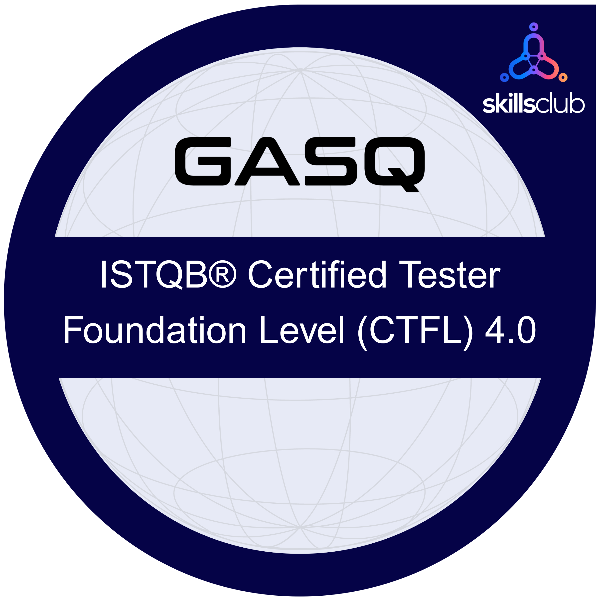

Profil · Recherche alternance dans le développement / conception d'applications
Fort d'une expertise en résolution de problèmes matériels et logiciels chez Apple, je me reconvertis aujourd'hui dans le Développement logiciel / Test QA.
Alliant rigueur analytique, leadership et culture du détail, je mets désormais mes compétences au service du software et à l'optimisation de l'expérience utilisateur.
01
Expériences professionnelles
Juin - Juillet 2026
Stage en test logiciel
HONEYGROUPE
Dans le cadre de mon stage de fin d’études à l’école ENI, j’ai piloté en totale autonomie l’audit global, technique, fonctionnel et sécurité de l’écosystème web et des API REST de l’entreprise (HONEY HUB et CRM). J’ai mis à profit la rigueur méthodologique et les exigences de l’Assurance Qualité (ISTQB) acquises durant mon cursus pour garantir des plateformes robustes, sécurisées et performantes.
- Tests API & UI : Conception de plans de tests fonctionnels sur Postman et diagnostic de l'IHM Angular.
- Routage & Formulaires : Audit du routage (app-routing.module.ts) et validation des Reactive Forms.
- Sécurité (OWASP) : Évaluation des risques (RBAC, jetons JWT, AuthGuard) et détection de failles.
- Suivi & Jira : Investigation des bugs (logs/DevTools), rédaction des plans de remédiation et reporting sur Jira.
- Routage & Formulaires : Audit du routage (app-routing.module.ts) et validation des Reactive Forms.
- Sécurité (OWASP) : Évaluation des risques (RBAC, jetons JWT, AuthGuard) et détection de failles.
- Suivi & Jira : Investigation des bugs (logs/DevTools), rédaction des plans de remédiation et reporting sur Jira.
Septembre - Octobre 2025
Stage en test logiciel
SKAZY
Immersion concrète dans le test logiciel, élaboration de scénarios pour des tests fonctionnels et exploratoires garantissant une réduction significative des régressions post-déploiement, analyse des résultats et rédaction de rapports.
Février 2024 - Mai 2025
Responsable Certification Apple & Référent Processus
Monaco Telecom
Lead certification Apple & Référent Processus
- Pilotage de la stratégie 'Tech-Corner'.
- Montée en compétence des équipes avec des formations techniques poussées et une refonte pour l’approche client et le SAV premium.
Expertise Technique de Haute Technicité
- Diagnostic avancé et réparation hardware/software d'un volume élevé d'appareils, dans le respect strict des certifications internes.
- Contrôle qualité rigoureux post-réparation : exécution de protocoles de tests fonctionnels, stress tests et tests système de performance/rodage.
- Résolution de pannes complexes et escalade des incidents non résolus.
Excellence Client
- Expertise technique et amélioration du parcours client pour accroître la fidélisation et valoriser l’image du SAV MONACO TELECOM.
- Pilotage de la stratégie 'Tech-Corner'.
- Montée en compétence des équipes avec des formations techniques poussées et une refonte pour l’approche client et le SAV premium.
Expertise Technique de Haute Technicité
- Diagnostic avancé et réparation hardware/software d'un volume élevé d'appareils, dans le respect strict des certifications internes.
- Contrôle qualité rigoureux post-réparation : exécution de protocoles de tests fonctionnels, stress tests et tests système de performance/rodage.
- Résolution de pannes complexes et escalade des incidents non résolus.
Excellence Client
- Expertise technique et amélioration du parcours client pour accroître la fidélisation et valoriser l’image du SAV MONACO TELECOM.
Avril 2019 - Janvier 2024
Cadre intégré 'Genius'
Apple Store, Marseille
Leadership opérationnel & Conformité
- Garant de la conformité des processus et de l'application rigoureuse des standards de sécurité et de qualité Apple.
- Optimisation des flux de travail (workflows) au Bar des Genius pour accroître l'efficacité de l'équipe et réduire les temps d'attente.
- Mentorat et montée en compétences des techniciens juniors sur les procédures de diagnostic complexes et la relation client.
Expertise Technique de Haute Technicité
- Diagnostic avancé et réparation hardware/software, dans le respect strict des certifications internes.
- Contrôle qualité rigoureux post-réparation : exécution de protocoles de tests fonctionnels, stress tests et tests système de performance/rodage.
- Résolution de pannes complexes et escalade des incidents non résolus vers l'ingénierie Apple via les canaux internes dédiés.
Optimisation de l'Expérience Client & Gestion du SAV
- Délivrance d'une expérience client d'excellence (NPS élevé) en traduisant des concepts techniques complexes en solutions simples et accessibles.
- Gestion de situations conflictuelles et désamorçage des tensions grâce à une écoute active et une empathie naturelle.
- Rédaction de rapports techniques détaillés et de synthèses opérationnelles pour le suivi de la traçabilité des pièces et la gestion des stocks SAV.
- Garant de la conformité des processus et de l'application rigoureuse des standards de sécurité et de qualité Apple.
- Optimisation des flux de travail (workflows) au Bar des Genius pour accroître l'efficacité de l'équipe et réduire les temps d'attente.
- Mentorat et montée en compétences des techniciens juniors sur les procédures de diagnostic complexes et la relation client.
Expertise Technique de Haute Technicité
- Diagnostic avancé et réparation hardware/software, dans le respect strict des certifications internes.
- Contrôle qualité rigoureux post-réparation : exécution de protocoles de tests fonctionnels, stress tests et tests système de performance/rodage.
- Résolution de pannes complexes et escalade des incidents non résolus vers l'ingénierie Apple via les canaux internes dédiés.
Optimisation de l'Expérience Client & Gestion du SAV
- Délivrance d'une expérience client d'excellence (NPS élevé) en traduisant des concepts techniques complexes en solutions simples et accessibles.
- Gestion de situations conflictuelles et désamorçage des tensions grâce à une écoute active et une empathie naturelle.
- Rédaction de rapports techniques détaillés et de synthèses opérationnelles pour le suivi de la traçabilité des pièces et la gestion des stocks SAV.
Juin 2017 - Avril 2019
Technicien spécialiste certifié
Apple Store, Nice
Identification et recherche de pannes, proposition de solutions pour optimiser la sécurité et les performances du matériel et logiciel.
Novembre 2014 - Juin 2017
Commercial
Apple Store, Nice
Spécialiste référent B2B/B2C retail, commercialisation et conseil en solutions IT, assurances et recyclage produits.
- Optimisation de la conversion des leads ainsi que de la CRM Data Quality.
- Assurer la formation des specialists juniors.
- Accompagnement clients et conseil en services et solutions IT.
- Optimisation de la conversion des leads ainsi que de la CRM Data Quality.
- Assurer la formation des specialists juniors.
- Accompagnement clients et conseil en services et solutions IT.
Janvier 2010 - Janvier 2020
Designer en communication visuelle & Photographe
Freelance (en parallèle)
Designer en communication visuelle, photographie professionnelle sportive et événementielle (freelance en parallèle).
02
Formation
05/2026
Certification ISTQB
Niveau Fondation

02/2026 – 08/2026
Formation Testeur Logiciel / QA
ENI École Informatique · Titre RNCP Niveau V — Bac+2
2017 – 2025
Certifications Techniques Apple
Mac
iPhone
iPad
Watch
AirPods
HomePod
Apple TV
Hardware + Software
07/2025 – 09/2025
Certification d'État T3P
Conducteur de Transport Public Particulier de Personnes
01/2010 – 01/2011
Anglais — Niveau 3/5
Centre Américain de Langues, Fès (Maroc)
2008 – 2009
Webmaster / Graphisme
Communication visuelle — Institut MULTIHEXA
2008 – 2009
Informatique Tronc commun
Institut MULTIHEXA, Oujda (Maroc)
2005 – 2006
Baccalauréat Technique
Gestion Comptabilité — Lycée Technique, Oujda (Maroc)
03
Outils & Technologies
QA & Test (en formation)
SeleniumCucumberKatalon StudioJiraDéveloppement (en formation)
PythonSQLHTMLCSSJavaScriptOutils créatifs & divers
PhotoshopLightroomWindows (3/5)